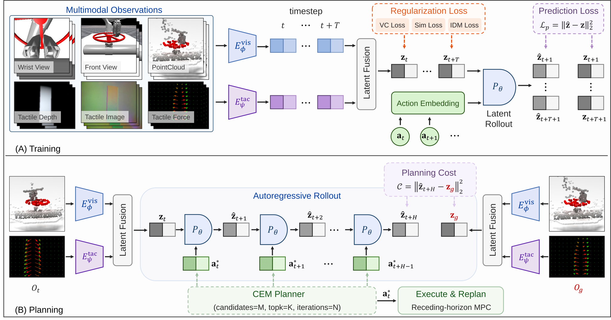
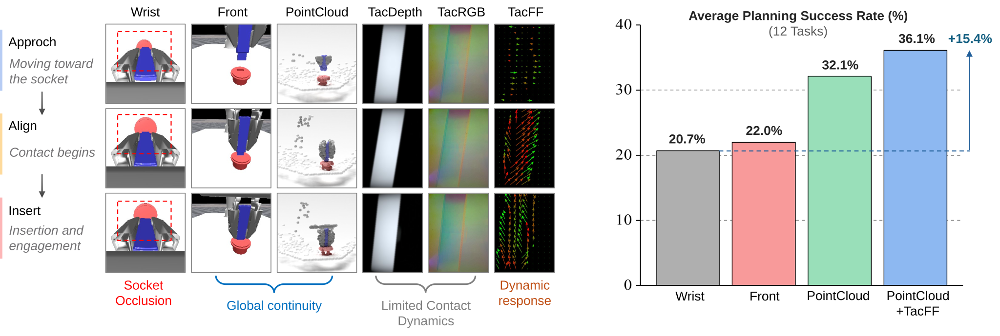

Purdue University | Texas A&M University
* Equal Contribution † Corresponding Author
ContactWorld is a benchmark and systematic empirical study of visual-tactile world models for contact-rich manipulation.
ContactWorld contains 12 contact-rich manipulation tasks spanning insertion, screwing, disassembly, and exploration. Each task provides six synchronized visual-tactile observation modalities.
Wrist View and Front View provide RGB visual observations. Point Cloud captures structured 3D geometry. TacDepth represents tactile depth deformation, TacRGB records high-resolution tactile appearance, and TacFF encodes contact force distributions and directions.
ContactWorld trains latent world models using multimodal visual-tactile observations and performs goal-conditioned planning through autoregressive latent rollout and model-predictive control.

(A) Training: multimodal latent world model learning. (B) Planning: goal-conditioned latent rollout with MPC.
ContactWorld reveals three key factors that determine world-model planning performance in contact-rich manipulation.
Representation structure matters. Representations with stronger spatial structure and temporal continuity consistently achieve better planning performance. Point clouds outperform image-based observations, while PointCloud+TacFF achieves the strongest overall results.

Representative rollouts across all ContactWorld tasks. Each video compares four world models: Wrist View, Front View, PointCloud, and PointCloud+TacFF. More modality combinations can be reproduced using the released code.
Autonomous vision-tactile world-model planning on physical robots.
@article{zhang2026contactworld,
title={ContactWorld: What Matters in Vision-Tactile World Models for Contact-Rich Manipulation},
author={Zhang, Zhiyuan and Zhou, Pokuang and Zhang, Kaidi and Desai, Adeesh and Amosa, Temitope and Soleymanzadeh, Davood and Lei, Jiuzhou and Zheng, Minghui and She, Yu},
journal={arXiv preprint},
year={2026}
}